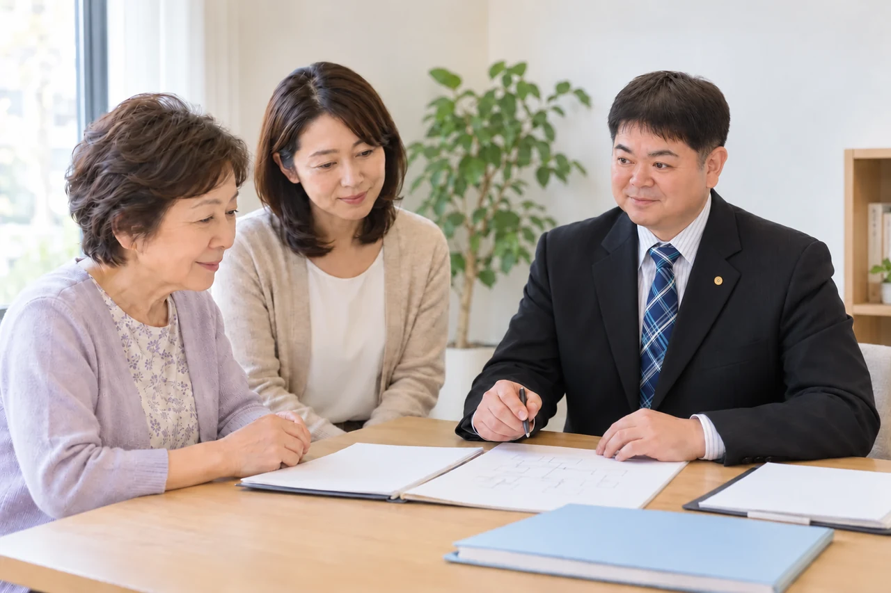

何から始めればいいか分からない
役所、銀行、年金事務所。提出先も書類も多く、順番が分からない。まずは全体の地図を持つことからです。
川崎・横浜の相続手続き相談室
戸籍を集める、財産を調べる、遺産分割協議書を作る、預貯金を解約する。ひとつひとつは調べれば分かりますが、全部を自分で進めるのは大変です。
行政書士・社会保険労務士が、今の状況から必要な手続きを整理し、最後まで一緒に進めます。
初回60分無料／土日祝は要予約
ご契約の前に書面でお見積り

困りごとから探す
役所、銀行、年金事務所。提出先も書類も多く、順番が分からない。まずは全体の地図を持つことからです。
相続放棄、相続税の申告、相続登記。期限のある手続きから確認します。いつから数えるかは、手続きによって異なります。
生まれてから亡くなるまでの戸籍を、本籍地をたどって集めます。古い戸籍は読み方にもコツがあります。
口座の凍結、銀行ごとに異なる書式や必要書類。提出する順番と確認事項を整理して進めます。
相続人全員で合意した内容を、銀行や不動産の手続きに使える書面にまとめます。
相続登記には期限があります。登記申請は提携司法書士が担当し、当事務所は調査や書類の準備をお手伝いします。
どれにも当てはまらない、複数当てはまる、という方こそご相談ください。
今の状況から相談する →全体の流れをつかむ
すべての手続きが必要とは限りません。期限の起算日や必要書類は、ご事情によって異なります。
7日以内
死亡の事実を知った日から7日以内（国外での死亡は3か月以内）。ご家族や葬儀社が進めることが多い手続きです。
担当・相談先：ご家族・葬儀社／市区町村
10〜14日以内
年金の死亡届は原則10日以内（国民年金は14日以内）。マイナンバーが登録されている方は原則不要です。健康保険などの手続きは自治体等に確認します。
担当・相談先：ご家族／年金事務所・市区町村
3か月以内
自分のために相続が始まったことを知った時から3か月以内。判断に迷う場合は早めに弁護士・司法書士へ。当事務所は財産調査などで連携します。
担当・相談先：弁護士・司法書士／家庭裁判所
4か月以内
相続の開始を知った日の翌日から4か月以内。亡くなった方の所得などにより要否を確認します。
担当・相談先：税理士／税務署
並行して
相続人と財産を調べ、遺言の有無を確認します。期限のある手続きの判断にも必要になる準備です。
担当・相談先：当事務所がお手伝い
並行して
相続人全員で合意した内容を書面にします。争いがある場合は弁護士へご相談いただきます。
担当・相談先：当事務所／相続人の皆さま
並行して
銀行・証券会社の解約や名義変更、未支給年金・遺族年金の請求を進めます。
担当・相談先：当事務所の行政書士・社会保険労務士
10か月以内
相続の開始を知った日の翌日から10か月以内。申告の要否や税額は税理士が確認します。
担当・相談先：税理士／税務署
3年以内
相続で所有権を取得したことを知った日から3年以内。2024年4月より前の相続も対象で、原則2027年3月31日までの対応が必要です。
担当・相談先：司法書士／法務局
原則5年
給付の種類により、いつから数えるかが異なります。例外もあるため、時間が経っている場合も年金事務所や社会保険労務士にご確認ください。
担当・相談先：社会保険労務士／年金事務所
2026年10月確認。個別の事情は各窓口・専門家にご確認ください。
出生から死亡までの戸籍やご家族の戸籍を確認し、相続関係説明図や法定相続情報一覧図の準備をお手伝いします。
預貯金・証券・不動産・保険や負債を確認し、ご家族が判断するための資料を整理します。
相続人の皆さまで合意された内容を、手続きに必要な書面にします。遠方の相続人との連絡も調整します。
金融機関ごとの書式を確認し、書類の準備・提出から完了の確認までお手伝いします。
社会保険労務士が給付の条件を確認し、相続の手続きと並行して年金の請求を進めます。
不動産の登記申請は司法書士、税務の申告は税理士、争いのあるご相談は弁護士の業務です。当事務所では直接お引き受けせず、必要書類の準備や連絡・調整をお手伝いします。提携専門家の報酬は別途お見積りとなります。
ご遺族の年金手続きについて →ご事情と必要な手続きを伺い、ご契約前に書面でお見積りします。
基本報酬の目安です。財産規模やご依頼の範囲により異なります。実費・提携専門家の報酬は別途となります。
料金・含まれる内容を詳しく見る →いま気になっていることを、テーマから確かめられます。
はい。すでに集めた書類や進めた手続きを確認し、不足する部分からお手伝いします。ご依頼の範囲に合わせてお見積りします。
郵送やオンラインでの連絡も使いながら、ご家族の状況に合わせて進め方を調整します。まずは相続人の人数やお住まいをお聞かせください。
登記申請は司法書士、相続税の申告は税理士が担当します。当事務所では直接お引き受けせず、必要な書類の準備や提携専門家との連絡をお手伝いします。専門家の報酬は別途お見積りとなります。
はい。初回60分は無料です。その場で契約を決める必要はありません。ご依頼前に書面でお見積りをご案内します。
初回60分無料
何が必要で、何が不要か。
それを整理するだけでも、気持ちは軽くなります。
平日9:00–18:00／18時以降・土日祝は要予約